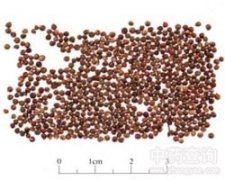

紫苏子

拼音
Zǐ Sū Zǐ
别名
苏子、黑苏子
来源
本品为唇形科植物紫苏Perilla frutescens （L.）Britt.的干燥成熟果实。秋季果实成熟时采收，除去杂质，晒干。
生境分布
产湖北、江苏、河南、山东、江西、浙江、四川等地。
药材特点
植物形态详"紫苏叶"条。
性状
本品呈卵圆形或类球形，直径约1.5mm。表面灰棕色或灰褐色，有微隆起的暗紫色网纹，基部稍尖，有灰白色点状果梗痕。果皮薄而脆，易压碎。种子黄白色，种皮膜质，子叶2,类白色，有油性。压碎有香气，味微辛。
性味
辛，温。
功能主治
降气消痰，平喘，润肠。用于痰壅气逆，咳嗽气喘，肠燥便秘。
用法用量
3～9g。
化学成分
种子含脂肪油（45.30％）及维生素B1。
药理作用
1：抗癌作用 给由7：12-二甲基苯并蒽和1，2-二甲基肼诱发的乳腺癌、结肠癌和肾母细胞瘤的大鼠喂饲含10%紫苏油（富含α-亚麻酸）的饲粒有抗癌作用[1]
2：其他作用 给易于中风的自发性高血压大鼠（SHR-SP）喂紫苏油可延长其存活率：使生存时间延长[2]
3：紫苏油还可提高大鼠学习能力[3]
4：毒性 紫苏子2.3-15.5g/kg喂牛：可产非典型间质性肺炎，但紫苏子在霜冻期后则无此毒性[4]
摘录
《中国药典》